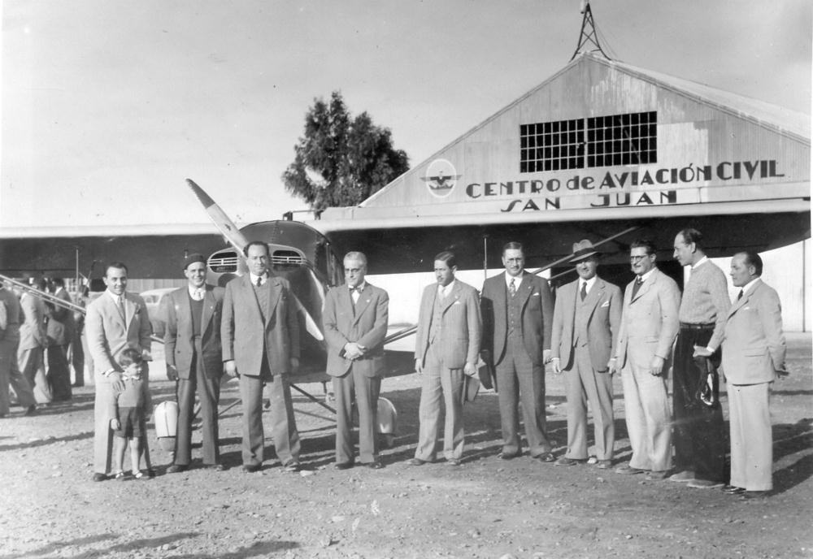
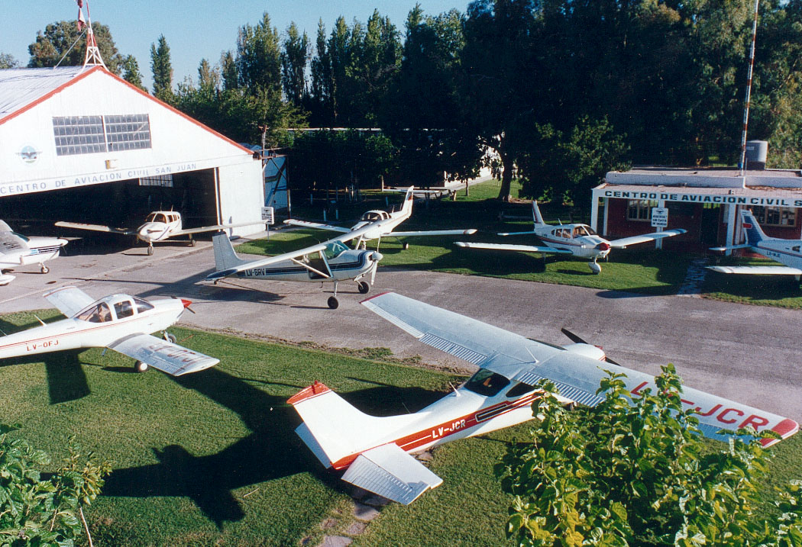
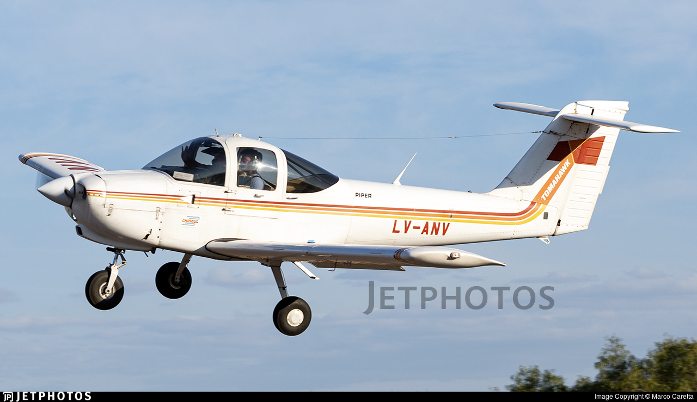
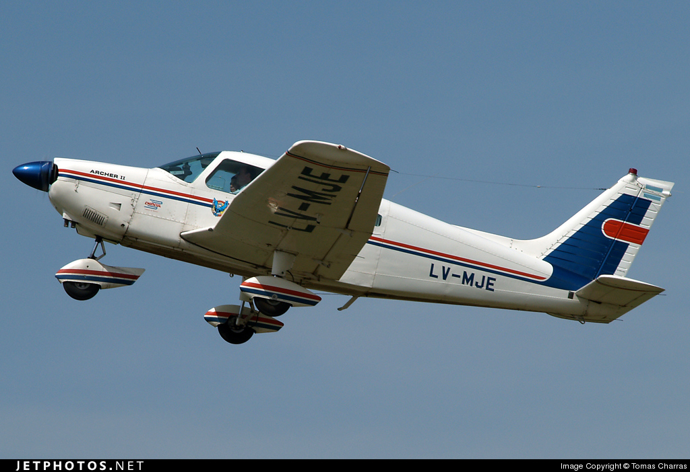
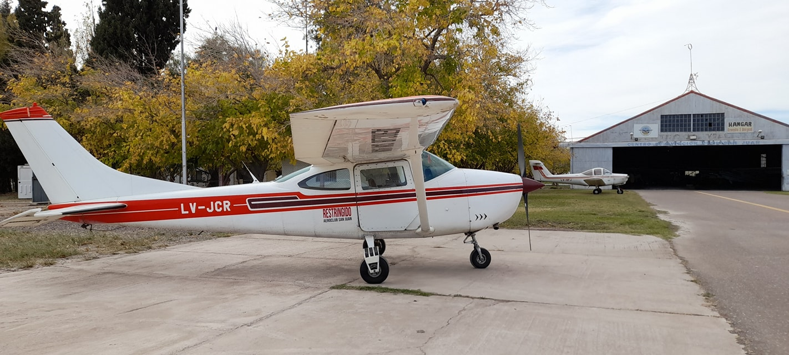
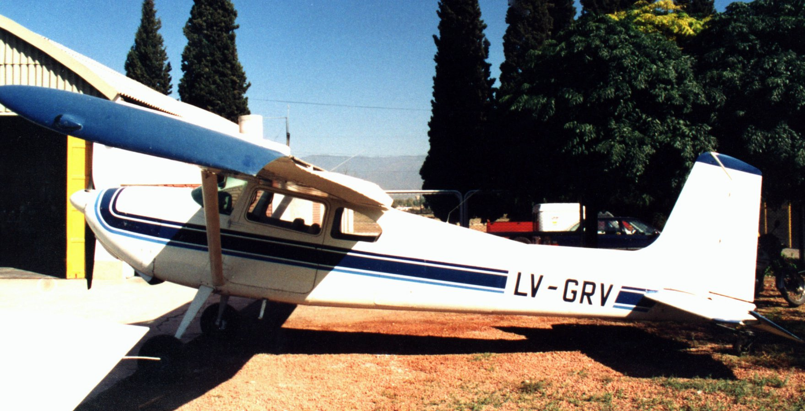

Iniciá tu carrera como piloto de avión.
¿Quiénes somos?

1942 – Pilotos en el Centro de Aviación Civil / Esta foto fue tomada en el campo de aviación de Marquesado del Centro de Aviación Civil de San Juan, el 16 de mayo de 1942, día de la llegada del “Piper” de Brisighelli. Posan para la toma los miembros de la comisión directiva del Centro de Aviación Civil. Era presidente del doctor Alfonso Barassi; vicepresidente, Indalecio Carmona Ríos; secretario, Alberto Zavalla; tesorero, Víctor Manuel Quiroga; protesorero, Alberto Castilla; vocal, Cándido Rodríguez Vila. También aparecen el instructor Celso Bucella, el piloto Walter Del Bono y el alumno-piloto Martínez Colombres. (Foto publicada en el libro “El San Juan que ud. no conoció”, de Juan Carlos Bataller – Proporcionada por Nelly Estrella de Carmona Ríos)
El Centro de Aviación Civil de San Juan fue fundado en 1939 por un grupo de conocidas personalidades sanjuaninas.
La institución que tuvo como objetivos primordiales fomentar el turismo y promover la aviación en la provincia, nació bajo el impulso de Alfonso Barassi, Indalecio Carmona Ríos, Agustín Gómez, Alberto Castilla, Francisco Bustelo Barcia, José Yanzón y Alberto Graffigna, entre otros.
El primer aeródromo fue un descampado aledaño al actual RIM 22 en Marquesado, aún hoy observable, donde se realizaron los primeros despegues y aterrizajes con suficiencia técnica y sin problemas humanos. En enero de 1942 se trasladó al predio de Mendoza entre 6 y 7, en el que levanta el complejo aerodeportivo, inaugurando la primera pista aérea local. A partir de entonces el Aeroclub comenzó a cumplir una importante función social, que quedó de manifiesto durante el terremoto del ´44, con el transporte de heridos, medicamentos y correspondencia hacia Mendoza y el aterrizaje de los aviones de auxilio.
En 1947 se presenta la ruta regular de la primera empresa aerocomercial en operar, la empresa Zonda, hasta que Aerolíneas Argentinas se constituye como línea aérea de bandera nacional el 7 de diciembre de 1950, producto de la fusión de las compañías Aeroposta, Fama, Alfa y Zonda. El aeródromo de Pocito es declarado público en 1943, hasta la habilitación del aeropuerto Las Chacritas en 1961.
En 1958 se produjo el incendio que destruyó el hangar y las once aeronaves que se encontraban en su interior. Con un trabajo colectivo, la institución levantó vuelo y fue sumando nuevas metas, entre las que se destacó la concesión de espacio para el hangar de la Dirección Provincial de Aeronáutica, desde donde opera actualmente.
Es ahora una entidad abierta, bien constituida en el orden social y jurídico, integrada a una excelente estructura recreativa y de utilidad, en una conjunción de deporte, pasión, formación de profesionales y asistencialismo comunitario, traslados, búsqueda y salvataje. La pista pavimentada tiene casi 1700 mts, adecuada a las exigencias de la aeronavegación. Cuenta al momento con nueve aviones, tres planeadores y escuelas de pilotaje, vuelo sin motor y de paracaidismo que es considerada la tercera en importancia nacional y un orgullo provinciano. Se han recibido más de 450 pilotos desde sus inicios y varios son profesionales. En la década del 50, se hicieron festivales aéreos muy concurridos y desde 2007 a 2014 hubo exhibiciones aéreas multitudinarias. También cuenta con varias hectareas donde se explota el camping, cancha de futbol, pista de aeromodelismo, entre otras.

Foto contemporanea del area de rodaje donde podemos observar las aeronaves del C.A.C.S.J. el hangar y el fichero.
Actividades
- Aviación a motor
- Volovelismo/planeador
- Paracaidismo
- Aeromodelismo
Iniciá tu carrera como piloto de planeador.
Iniciá tu carrera como piloto de paracaidas.
Comenzá a disfrutar el hoby de crear y volar aeromodelos.
Flota
- Piper PA-38 Tomahawk 
- Piper PA-28-181 Archer II 
- Cessna 182 
- IA 46 Ranquel
- Cessna 180 
- Piper PA-34 Seneca


Social
- Camping
- Vuelos de bautismo
- Vuelo de bautismo en planeador
- Salto tándem
- Visitas guiadas y charlas informativas
Vení a disfrutar del camping del Centro de aviación civíl San Juan, donde podés disfrutar del amplio espacio verde, parrilleros, mesas, cantina, cancha de basquet/volley y nustra gran pileta, mientras ves toda la actividad aeronautica al rededor.
Viví la experiencia de un vuelo panorámico sobre la provincia de San Juan, donde podrás disfrutar de los circuitos preestablecidos de 30 minutos o 1 hora, o armá tu recorrido vos según tus preferencias.
Experimentá la sensación de "flotar" y sentir cada fenomeno de la atmósfera de manera única.
Animate a largarte al vacío con los mejores profesionales cuidándote, elegí el plan que más se adapte a vos!
Servicio brindado por todos los miebros del aeroclub, sin fines de lucro, con el objetivo de integrar a toda la sociedad en el mundo de la aeronáutica y de hacer que conozcan este club con la importancia turística y social que tiene, donde se muestran las instalaciones, las aeronaves y se da una charla explicativa de conceptos básicos y cualquier otro tema que los participantes estén interesados en hablar. Ideal para que instutuciones como escuelas propongan a modo de excursión.